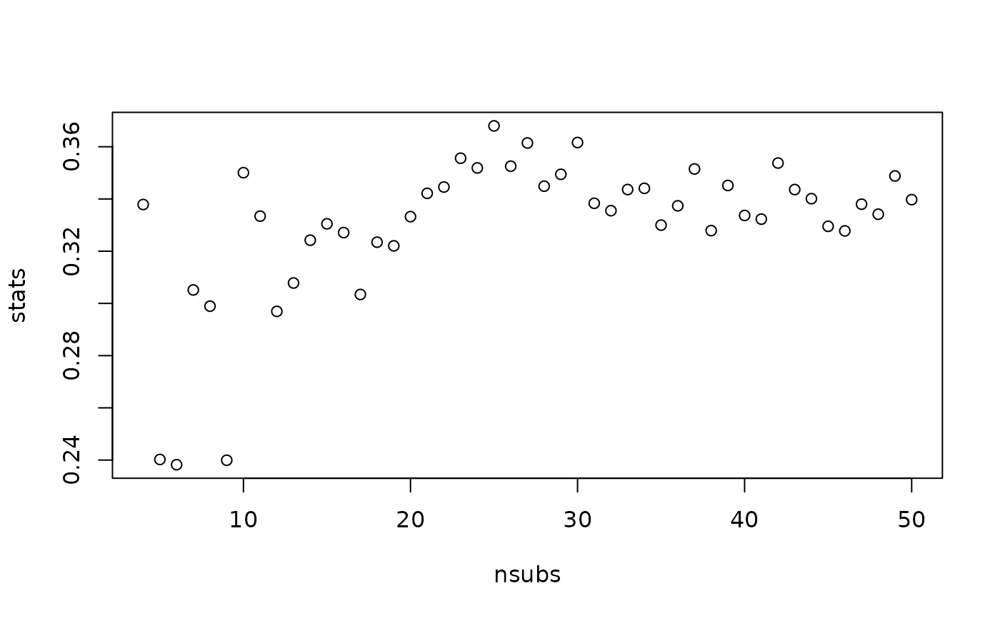

These are functions primarily designed for programmers who want to be able to quickly compute one of several scalar (single number) sample balance statistics, e.g., for use in selecting a tuning parameter when estimating balancing weights. bal.compute() computes a scalar balance statistics from the supplied inputs. bal.init() initializes the input so that when bal.compute() is used on the output along with a set of weights, the computation of the balance statistic is fast. vignette("optimizing-balance") provides an overview and more examples of how to use these functions. available.stats() returns the balance statistics available for the given treatment type.
Usage
bal.compute(x, ...)
# S3 method for bal.init
bal.compute(x, weights = NULL, ...)
# S3 method for default
bal.compute(x, treat, stat, s.weights = NULL, weights = NULL, ...)
bal.init(x, treat, stat, s.weights = NULL, ...)
available.stats(treat.type = "binary")Arguments
- x
for
bal.compute(), abal.initobject created bybal.init()or a matrix or data frame containing the covariates. Forbal.init(), a matrix or data frame containing the covariates.- ...
other arguments used to specify options for the balance statistic. See Details for which arguments are allowed with each balance statistic. Ignored for the
bal.initmethod ofbal.compute().- weights
a vector of balancing weights to compute the weighted statistics.
- treat
a vector containing the treatment variable.
- stat
string; the name of the statistic to compute. See Details.
- s.weights
optional; a vector of sampling weights.
- treat.type
string; the treatment type, either
"binary","multinomial", or"continuous". Abbreviations allowed.
Value
For bal.compute(), a single numeric value. For bal.init(), a bal.init object containing the components created in the initialization and the function used to compute the balance statistic. For available.stats(), a character vector of available statistics.
Details
The following list contains the allowable balance statistics that can be supplied to bal.init() or the default method of bal.compute(), the additional arguments that can be used with each one, and the treatment types allowed with each one. For all balance statistics, lower values indicate better balance.
smd.mean,smd.max,smd.rmsThe mean, maximum, or root-mean-squared absolute standardized mean difference, computed using
col_w_smd(). The other allowable arguments includeestimand("ATE","ATT", or"ATC") to select the estimand (default is"ATE"),focalto identify the focal treatment group when the ATT is the estimand and the treatment has more than two categories, andpairwiseto select whether mean differences should be computed between each pair of treatment groups or between each treatment group and the target group identified byestimand(defaultTRUE). Can be used with binary and multi-category treatments.ks.mean,ks.max,ks.rmsThe mean, maximum, or root-mean-squared Kolmogorov-Smirnov statistic, computed using
col_w_ks(). The other allowable arguments includeestimand("ATE","ATT", or"ATC") to select the estimand (default is"ATE"),focalto identify the focal treatment group when the ATT is the estimand and the treatment has more than two categories, andpairwiseto select whether statistics should be computed between each pair of treatment groups or between each treatment group and the target group identified byestimand(defaultTRUE). Can be used with binary and multi-category treatments.ovl.mean,ovl.max,ovl.rmsThe mean, maximum, or root-mean-squared overlapping coefficient complement, computed using
col_w_ovl(). The other allowable arguments includeestimand("ATE","ATT", or"ATC") to select the estimand (default is"ATE"),integrateto select whether integration is done using usingintegrate()(TRUE) or a Riemann sum (FALSE, the default),focalto identify the focal treatment group when the ATT is the estimand and the treatment has more than two categories,pairwiseto select whether statistics should be computed between each pair of treatment groups or between each treatment group and the target group identified byestimand(defaultTRUE). Can be used with binary and multi-category treatments.mahalanobisThe Mahalanobis distance between the treatment group means. This is similar to
smd.rmsbut the covariates are standardized to remove correlations between them and de-emphasize redundant covariates. The other allowable arguments includeestimand("ATE","ATT", or"ATC") to select the estimand (default is"ATE") andfocalto identify the focal treatment group when the ATT is the estimand. Can only be used with binary treatments.energy.distThe total energy distance between each treatment group and the target sample, which is a scalar measure of the similarity between two multivariate distributions. The other allowable arguments include
estimand("ATE","ATT","ATC", orNULL) to select the estimand (default isNULL),focalto identify the focal treatment group when the ATT is the estimand and the treatment has more than two categories, andimprovedto select whether the "improved" energy distance should be used whenestimand = "ATE", which emphasizes difference between treatment groups in addition to difference between each treatment group and the target sample (defaultTRUE). Whenestimand = NULL, only the energy distance between the treatment groups will be computed (i.e., as opposed to the energy distance between each treatment groups and the target sample). Can be used with binary and multi-category treatments.kernel.distThe kernel distance between the treatment groups, which is a scalar measure of the similarity between two multivariate distributions. Can only be used with binary treatments.
l1.medThe median L1 statistic computed across a random selection of possible coarsening of the data. The other allowable arguments include
estimand("ATE","ATT", or"ATC") to select the estimand (default is"ATE"),focalto identify the focal treatment group when the ATT is the estimand and the treatment has more than two categories,l1.min.bin(default 2) andl1.max.bindefault (12) to select the minimum and maximum number of bins with which to bin continuous variables andl1.n(default 101) to select the number of binnings used to select the binning at the median.covsshould be supplied without splitting factors into dummies to ensure the binning works correctly; for simplicity, the.covsargument can be supplied, which will overridecovsbut isn't used by other statistics. Can be used with binary and multi-category treatments.r2,r2.2,r2.3The post-weighting \(R^2\) of a model for the treatment. The other allowable arguments include
polyto add polynomial terms of the supplied order to the model andint(defaultFALSE) to add two-way interaction between covariates into the model. Usingr2.2is a shortcut to requesting squares, and usingr2.3is a shortcut to requesting cubes. Can be used with binary and continuous treatments. For binary treatments, the McKelvey and Zavoina \(R^2\) from a logistic regression is used; for continuous treatments, the \(R^2\) from a linear regression is used.p.mean,p.max,p.rmsThe mean, maximum, or root-mean-squared absolute Pearson correlation between the treatment and covariates, computed using
col_w_corr(). Can only be used with continuous treatments.s.mean,s.max,s.rmsThe mean, maximum, or root-mean-squared absolute Spearman correlation between the treatment and covariates, computed using
col_w_corr(). Can only be used with continuous treatments.distance.covThe distance covariance between the scaled covariates and treatment, which is a scalar measure of the independence of two possibly multivariate distributions. Can only be used with continuous treatments.
Although statistics can be computed directly using bal.compute() alone, the intended workflow is to use bal.init() to initialize a bal.init object, which can then be passed to bal.compute() many times with different sets of weights, thereby minimizing the processing that bal.init() does because it is only done once. In contrast, using bal.compute() on covariates directly (i.e., using the default method) calls bal.init() internally each time, which can slow down evaluation. When speed isn't of interest or to calculate a balance statistic outside the context of balance optimization, the default method of bal.compute() can be a quick shortcut to avoid having to create a bal.init object first.
See also
See vignette("optimizing-balance") for references and definitions of some of the above quantities.
Examples
# Select the optimal number of subclasses for
# subclassification:
data("lalonde")
covs <- c("age", "educ", "race", "married",
"nodegree", "re74", "re75")
# Estimate propensity score
p <- glm(reformulate(covs, "treat"),
data = lalonde,
family = "binomial")$fitted.values
# Function to compute subclassification weights
subclass_ATE <- function(treat, p, nsub) {
m <- MatchIt::matchit(treat ~ 1,
data = lalonde,
distance = p,
method = "subclass",
estimand = "ATE",
subclass = nsub)
return(m$weights)
}
# Initialize balance statistic; largest KS statistic
init <- bal.init(lalonde[covs], treat = lalonde$treat,
stat = "ks.max",
estimand = "ATE")
# Statistic prior to subclassification:
bal.compute(init)
#> [1] 0.640446
# Testing 4 to 50 subclasses
nsubs <- 4:50
stats <- vapply(nsubs, function(n) {
w <- subclass_ATE(lalonde$treat, p, n)
bal.compute(init, w)
}, numeric(1L))
plot(stats ~ nsubs)

# 6 subclass gives lowest ks.max value (.238)
nsubs[which.min(stats)]
#> [1] 6
stats[which.min(stats)]
#> [1] 0.2382289
# See which statistics are available
available.stats("binary")
#> [1] "smd.mean" "smd.max" "smd.rms" "ks.mean" "ks.max"
#> [6] "ks.rms" "ovl.mean" "ovl.max" "ovl.rms" "mahalanobis"
#> [11] "energy.dist" "kernel.dist" "l1.med" "r2" "r2.2"
#> [16] "r2.3"
available.stats("multinomial")
#> [1] "smd.mean" "smd.max" "smd.rms" "ks.mean" "ks.max"
#> [6] "ks.rms" "ovl.mean" "ovl.max" "ovl.rms" "energy.dist"
#> [11] "l1.med"